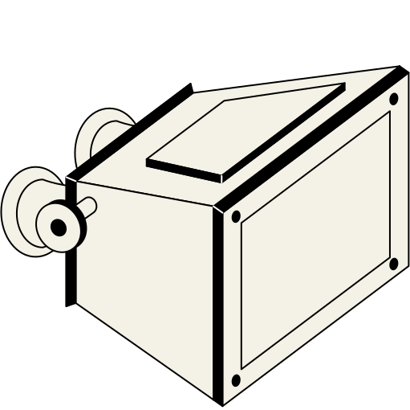
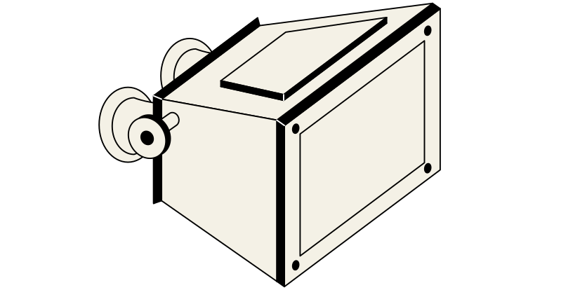

For most people, when we view the world we see with two eyes. But what happens when we only look through one, or the other?
In the 19th century Sir Charles Wheatstone was asking the same questions and wanted to investigate how people could see with depth by translating 2D imagery to 3D perception[1].
In 1838, he created the design of the first stereoscope, which utilised a mirror system to present objects as planes of surfaces split into two images.
The emergence of photography was paramount to the success of stereoscopes as photographs provided consistent accuracy in angle differences that illustrations could not achieve.
Sir David Brewster improved upon this original design, with the aid of photographic imagery, and transformed the practice by using prisms rather than mirrors, and is considered the first to invent the lenticular stereoscope in 1849.

Lenticular stereoscopes used convex lenses as squinting magnifiers to allow stereographs (also known as double-eyed or twin pictures) to seamlessly slide into each other, like in natural vision to be perceived as one image.
This lenticular design was updated again in 1861 by Oliver Wendell Holmes, who improved upon the box-form frame of the Brewster type by making it more portable and economical.
Commercial mass produced products such as the pocket stereoscope or View-Master provided audiences with the opportunity to experience landscapes and sceneries in ways that were only thought possible by physically being there.
As a practice of visual communication, stereoscopes are a spacemaking application of photography and can be considered the first form of visually simulated realities.
Early applications of the stereoscope aimed to present the natural world for what it truly was, but not actually interact with it.
Derivatives of the stereoscope can be seen in the era of 3D cinema, utilising anaglyph systems or polarisation to separate left and right images.
Contemporary practices of stereoscopic technologies incorporate interactive elements to simulate real and speculative worlds through augmented and virtual realities.
With an analog and limited beginning, the impact of stereoscope technologies has reshaped the way we experience the real world.
Wheatstone stereoscope

Brewster type stereoscope
Holmes type stereoscope
View-master stereoscope
Virtual reality headset
Footnotes
1 Wade, N. (2002) Guest editorial. Perception, vol. 31, p 265-272.
Wikimedia. (.n.d.). [Charles Wheatstone stereoscope - woodcut 1840s] [Illustration]. https://commons.wikimedia.org/wiki/File:Charles_Wheatstone-mirror_stereoscope_XIXc.jpg. In the Public Domain
Boston Almanac. (1871). [Holmes stereoscope with improvements from Joseph L. Bates] [Illustration]. Wikimedia. https://commons.wikimedia.org/wiki/File:1871_Bates_stereoscope_BostonAlmanac.png. In the Public Domain.
Gampe. (29 May 2019). [Brewster type stereoscope] [Photograph]. Wikimedia. https://commons.wikimedia.org/wiki/File:Stereoscope_(9430).jpg. CC BY-SA 4.0
Kobbaka. (6 June 2016). [View-Master model L] [Photograph]. Wikimedia. https://commons.wikimedia.org/wiki/File:View-Master_model_L.jpg. CC BY-SA 4.0